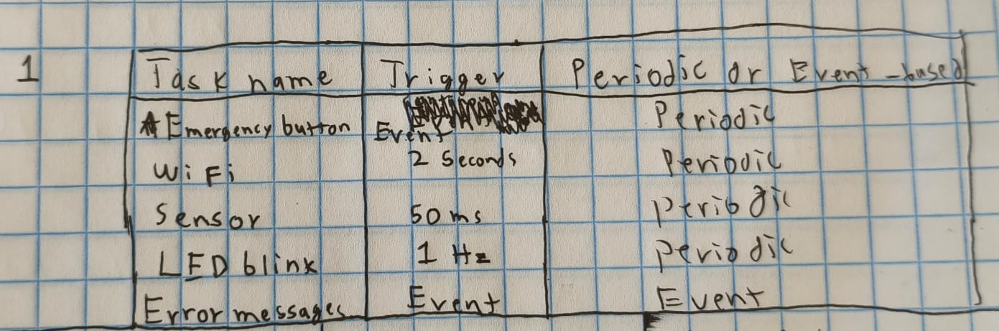
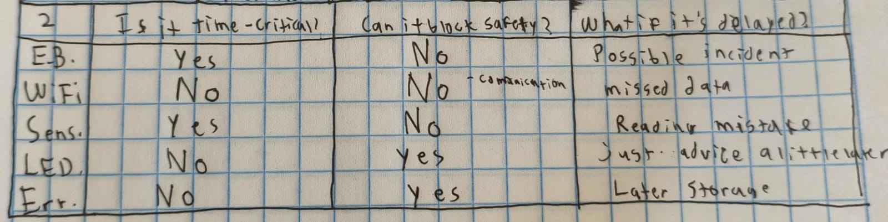
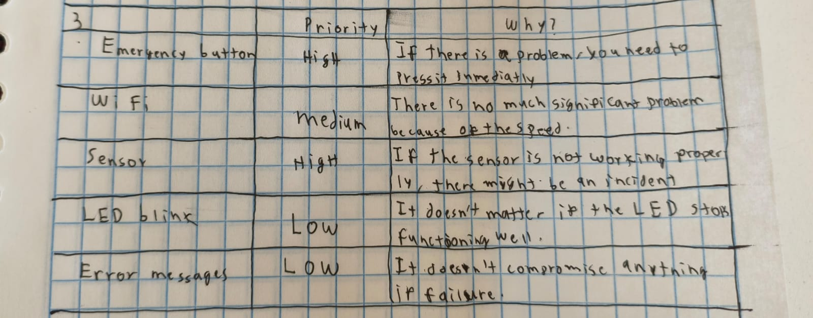
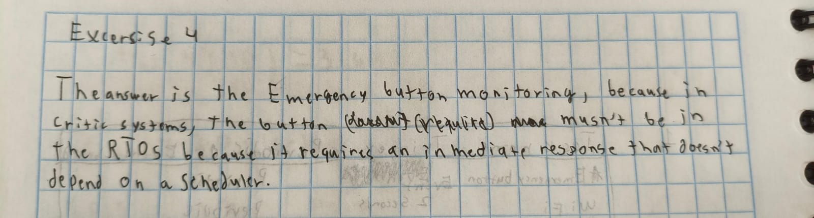

ASSIGNMENTS OF THE COURSE
Assignment 1: Tasks 1-5
Objective
The goal of this exercise is to train you to identify logical FreeRTOS tasks from system behavior, even when no RTOS code is shown.
You should focus on:
-Timing requirements.
-Blocking behavior.
-Safety and criticality.
-Independent execution flows.
Think in terms of "what must happen independently", not functions or lines of code.
Description
The system:
-Reads a temperature sensor every 50 ms.
-Sends sensor data via Wi-Fi every 2 seconds.
-Monitors an emergency button continuously.
-Blinks a status LED at 1 Hz.
-Stores error messages when failures occur.
Assume:
-The system runs on a microcontroller.
-Timing matters.
-Some operations may block (Wi-Fi, storage).
Exercise 1 - Identify Logical Tasks
List the logical tasks that exist in this system.

Exercise 2 - Task Characteristics
For each task you identified, answer the following:
-Is it time-critical? (Yes/No).
-Can it block safely? (Yes/No).
-What happens if this task is delayed?.
Write short, technical answers.

Excersice 3 - Priority Reasoning
Assign a relative priority to each task:
-High.
-Medium.
-Low.
Then justify each choice in one sentece.

Exercise 4 - Design Judgment (Trick Question)
Which of the following should NOT necessarily be implemented as a FreeRTOS task?
-Emergency button monitoring.
-Wi-Fi trnsmission.
-Error logging.
-Status LED blinking.
Explain why in 2-3 sentences.

Assignment 2: LAB 1-3
Lab 1
Create two tasks:
blink_task: toggles an LED every 300 ms
hello_task: prints a message every 1 second
What to watch for
- Both tasks run (interleave).
- Changing priority can change which task runs “more” or “first”.
- If you remove a delay from a task, it may hog the CPU.
Code Lab 1
#include <stdio.h>
#include "freertos/FreeRTOS.h"
#include "freertos/task.h"
#include "driver/gpio.h"
#include "esp_log.h"
#define LED_GPIO GPIO_NUM_2 // CHANGE for your board
static const char *TAG = "LAB1";
static void blink_task(void *pvParameters)
{
gpio_reset_pin(LED_GPIO);
gpio_set_direction(LED_GPIO, GPIO_MODE_OUTPUT);
while (1) {
gpio_set_level(LED_GPIO, 1);
vTaskDelay(pdMS_TO_TICKS(300));
gpio_set_level(LED_GPIO, 0);
vTaskDelay(pdMS_TO_TICKS(300));
}
}
static void hello_task(void *pvParameters)
{
int n = 0;
while (1) {
ESP_LOGI(TAG, "hello_task says hi, n=%d", n++);
vTaskDelay(pdMS_TO_TICKS(1000));
}
}
void app_main(void)
{
ESP_LOGI(TAG, "Starting Lab 1 (two tasks)");
// Stack size in ESP-IDF FreeRTOS is in BYTES
xTaskCreate(blink_task, "blink_task", 2048, NULL, 5, NULL);
xTaskCreate(hello_task, "hello_task", 2048, NULL, 5, NULL);
}
- Priority experiment: change hello_task priority from 5 to 2.
- Does behavior change? Why might it (or might it not)?
- Starvation demo: temporarily remove vTaskDelay(...) from hello_task.
- What happens to blinking?
- Put the delay back and explain in one sentence why blocking helps.
Answers
1.-Priority experiment (hello_task priority 5 → 2):
The blink_task runs more consistently, while hello_task still runs but may execute less frequently.
2.- Does behavior change? Why might it (or might it not)?
The behavior changes slightly because a higher-priority task is scheduled first, but both tasks still run since they block using delays.
3.- Starvation demo (remove vTaskDelay from hello_task):
hello_task runs continuously and at some point the CPU crashes.
4.- What happens to blinking?
The LED stops blinking or becomes very irregular because blink_task is starved of CPU time.
5.- Why blocking helps (one sentence):
Blocking with delays allows to switch tasks fairly and prevents one task from monopolizing the CPU.
Lab 2
Use a queue to pass integers from a producer task to a consumer task.
Why it matters: - Queues are a clean way to pass data without sharing global variables.
Code Lab 2
#include <stdio.h>
#include "freertos/FreeRTOS.h"
#include "freertos/task.h"
#include "freertos/queue.h"
#include "esp_log.h"
static const char *TAG = "LAB2";
static QueueHandle_t q_numbers;
static void producer_task(void *pvParameters)
{
int value = 0;
while (1) {
value++;
// Send to queue; wait up to 50ms if full
if (xQueueSend(q_numbers, &value, pdMS_TO_TICKS(50)) == pdPASS) {
ESP_LOGI(TAG, "Produced %d", value);
} else {
ESP_LOGW(TAG, "Queue full, dropped %d", value);
}
vTaskDelay(pdMS_TO_TICKS(200));
}
}
static void consumer_task(void *pvParameters)
{
int rx = 0;
while (1) {
// Wait up to 1000ms for data
if (xQueueReceive(q_numbers, &rx, pdMS_TO_TICKS(1000)) == pdPASS) {
ESP_LOGI(TAG, "Consumed %d", rx);
} else {
ESP_LOGW(TAG, "No data in 1s");
}
}
}
void app_main(void)
{
ESP_LOGI(TAG, "Starting Lab 2 (queue)");
q_numbers = xQueueCreate(5, sizeof(int)); // length 5
if (q_numbers == NULL) {
ESP_LOGE(TAG, "Queue create failed");
return;
}
xTaskCreate(producer_task, "producer_task", 2048, NULL, 5, NULL);
xTaskCreate(consumer_task, "consumer_task", 2048, NULL, 5, NULL);
}
1.- Make the producer faster: change producer delay 200ms → 20ms. 2.- When do you see “Queue full”? 3.- Increase the queue length 5 → 20. 4.- What changes? 5.- Make the consumer “slow”: after a successful receive, add: 6.- What pattern is happening now (buffering / backlog)?
answers
1.- Make the producer faster (200ms → 20ms):
The producer generates data much faster than the consumer can process it.
2.- When do you see “Queue full”?
Right now it never appears, but it would appear if the producer fills the queue faster than the consumer removes items from it.
3.- Increase the queue length (5 → 20):
The queue can store more items before becoming full.
4.- What changes?
Queue full never appears or takes a lot of time to appear.
5.- Make the consumer “slow”:
After adding a delay, the consumer processes items more slowly than they are produced.
6.- What pattern is happening now (buffering / backlog)?
A backlog forms where items accumulate in the queue faster than they are consumed.
Lab 3 Mutex
See a race condition happen with a shared counter, then fix it with a mutex.
Code Lab 3 Part A
#include <stdio.h>
#include "freertos/FreeRTOS.h"
#include "freertos/task.h"
#include "esp_log.h"
static const char *TAG = "LAB3A";
static volatile int shared_counter = 0;
static void increment_task(void *pvParameters)
{
const char *name = (const char *)pvParameters;
while (1) {
// NOT safe: read-modify-write without protection
int local = shared_counter;
local++;
shared_counter = local;
if ((shared_counter % 1000) == 0) {
ESP_LOGI(TAG, "%s sees counter=%d", name, shared_counter);
}
vTaskDelay(pdMS_TO_TICKS(1));
}
}
void app_main(void)
{
ESP_LOGI(TAG, "Starting Lab 3A (race demo)");
xTaskCreate(increment_task, "incA", 2048, "TaskA", 5, NULL);
xTaskCreate(increment_task, "incB", 2048, "TaskB", 5, NULL);
}
Because both tasks access and modify the shared variable at the same time without synchronization, causing race conditions.
Code Lab 3 Part B
#include <stdio.h>
#include "freertos/FreeRTOS.h"
#include "freertos/task.h"
#include "freertos/semphr.h"
#include "esp_log.h"
static const char *TAG = "LAB3B";
static volatile int shared_counter = 0;
static SemaphoreHandle_t counter_mutex;
static void increment_task(void *pvParameters)
{
const char *name = (const char *)pvParameters;
while (1) {
xSemaphoreTake(counter_mutex, portMAX_DELAY);
int local = shared_counter;
local++;
shared_counter = local;
xSemaphoreGive(counter_mutex);
if ((shared_counter % 1000) == 0) {
ESP_LOGI(TAG, "%s sees counter=%d", name, shared_counter);
}
vTaskDelay(pdMS_TO_TICKS(1));
}
}
void app_main(void)
{
ESP_LOGI(TAG, "Starting Lab 3B (mutex fix)");
counter_mutex = xSemaphoreCreateMutex();
if (counter_mutex == NULL) {
ESP_LOGE(TAG, "Mutex create failed");
return;
}
xTaskCreate(increment_task, "incA", 2048, "TaskA", 5, NULL);
xTaskCreate(increment_task, "incB", 2048, "TaskB", 5, NULL);
}
1.- Remove the mutex again. Do you ever see weird behavior? 2.- Change priorities: TaskA priority 6, TaskB priority 4. 3.- What do you expect and why? 4.- In one sentence: what does a mutex “guarantee”?
answers
1.- Remove the mutex again. Do you ever see weird behavior?
Yes, the counter sometimes skips or repeats values due to race conditions.
2.- Change priorities (TaskA = 6, TaskB = 4):
TaskA runs more often because it has higher priority.
3.- What do you expect and why?
TaskA increments the counter more frequently since the scheduler favors higher-priority tasks.
4.- In one sentence: what does a mutex “guarantee”?
A mutex guarantees exclusive access to a shared variable so only one task can use it at a time.
Task Excercise
Goal
Use the task´s learned commands to create a program that uses 7 different tasks
What to watch for
-Task 1: Heartbeat
-Task 2: Alive task
-Task 3: Queue Struct Send
-Task 4: Queue Struct Receive
-Task 5 and 6: Mutex reading a button
-Task 7: Error loggin for task 1-6
Code
#include <stdio.h>
#include <string.h>
#include "freertos/FreeRTOS.h"
#include "freertos/task.h"
#include "freertos/queue.h"
#include "freertos/semphr.h"
#include "driver/gpio.h"
#include "esp_log.h"
#define LED_GPIO GPIO_NUM_20
#define BUTTON GPIO_NUM_21
static const char *TAG = "LAB1";
static SemaphoreHandle_t btn_mutex = NULL;
static uint32_t task_counters[6] = {0};
typedef struct {
char id[20];
int value;
} DataMessage;
QueueHandle_t structQueue;
static void blink_task(void *pvParameters)
{
gpio_reset_pin(LED_GPIO);
gpio_set_direction(LED_GPIO, GPIO_MODE_OUTPUT);
while (1) {
task_counters[0]++;
gpio_set_level(LED_GPIO, 1);
vTaskDelay(pdMS_TO_TICKS(150));
gpio_set_level(LED_GPIO, 0);
vTaskDelay(pdMS_TO_TICKS(150));
gpio_set_level(LED_GPIO, 1);
vTaskDelay(pdMS_TO_TICKS(150));
gpio_set_level(LED_GPIO, 0);
vTaskDelay(pdMS_TO_TICKS(150));
vTaskDelay(pdMS_TO_TICKS(500));
}
}
static void Live(void *pvParameters)
{
while (1) {
task_counters[1]++;
ESP_LOGI(TAG, "The pacient is alive (BPM=95)");
vTaskDelay(pdMS_TO_TICKS(2000));
}
}
static void sender_task(void *pvParameters)
{
DataMessage myData;
strcpy(myData.id, "CHARLY");
int count = 0;
while (1) {
task_counters[2]++;
myData.value = count;
if (xQueueSend(structQueue, &myData, pdMS_TO_TICKS(100)) == pdPASS) {
}
count++;
vTaskDelay(pdMS_TO_TICKS(1000));
}
}
static void receiver_task(void *pvParameters)
{
DataMessage receivedData;
while (1) {
task_counters[3]++;
if (xQueueReceive(structQueue, &receivedData, portMAX_DELAY) == pdTRUE) {
ESP_LOGI(TAG, "QUEUE RECIEVED, PATIENT: %s, VALUE: %d", receivedData.id, receivedData.value);
}
}
}
static void mutex_button_task(void *pvParameters) {
int task_idx = (int)pvParameters;
const char* message = (task_idx == 4) ? "I hate charly" : "I hate Javi";
while (1) {
task_counters[task_idx]++;
if (xSemaphoreTake(btn_mutex, portMAX_DELAY) == pdTRUE) {
if (gpio_get_level(BUTTON) == 0) {
ESP_LOGI(TAG, "%s", message);
vTaskDelay(pdMS_TO_TICKS(200));
}
xSemaphoreGive(btn_mutex);
}
vTaskDelay(pdMS_TO_TICKS(100));
}
}
static void monitor_task(void *pvParameters) {
uint32_t last_counters[6] = {0};
while (1) {
vTaskDelay(pdMS_TO_TICKS(5000));
for (int i = 0; i < 6; i++) {
if (task_counters[i] == last_counters[i]) {
ESP_LOGE("MONITOR", "ERROR: Tarea %d detenida", i);
} else {
last_counters[i] = task_counters[i];
}
}
}
}
void app_main(void)
{
ESP_LOGI(TAG, "Starting Lab 1");
gpio_reset_pin(BUTTON);
gpio_set_direction(BUTTON, GPIO_MODE_INPUT);
gpio_pullup_en(BUTTON);
structQueue = xQueueCreate(10, sizeof(DataMessage));
btn_mutex = xSemaphoreCreateMutex();
if (structQueue == NULL || btn_mutex == NULL) {
ESP_LOGE(TAG, "Error creating Queue or Mutex");
return;
}
xTaskCreate(blink_task, "blink_task", 2048, NULL, 5, NULL);
xTaskCreate(Live, "Live", 2048, NULL, 5, NULL);
xTaskCreate(sender_task, "sender", 2048, NULL, 5, NULL);
xTaskCreate(receiver_task, "receiver", 2048, NULL, 5, NULL);
xTaskCreate(mutex_button_task, "BtnCharly", 2048, (void*)4, 5, NULL);
xTaskCreate(mutex_button_task, "BtnJavi", 2048, (void*)5, 5, NULL);
xTaskCreate(monitor_task, "Monitor", 2048, NULL, 6, NULL);
}